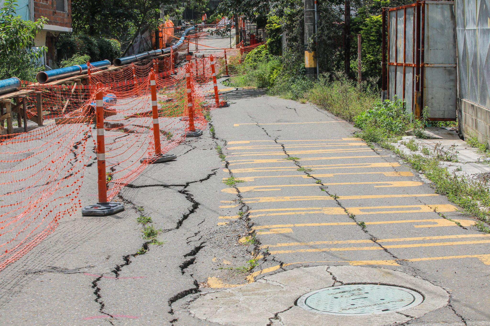
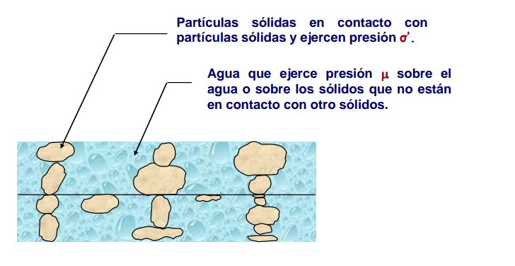
La relación entre los esfuerzos aplicados y las deformaciones resultantes en suelos es compleja debido a la naturaleza inelástica y heterogénea del material. A diferencia de los materiales rígidos (como los metales), los suelos no tienen una relación lineal constante entre esfuerzo y deformación (ley de Hooke).
La Ley de Hooke establece que, dentro del rango elástico, el esfuerzo es directamente proporcional a la deformación.
Es válida para pequeñas deformaciones en la mayoría de los materiales, incluyendo suelos densos y rocas a bajos niveles de esfuerzo, pero no describe adecuadamente el comportamiento de suelos blandos o materiales con comportamiento no lineal.
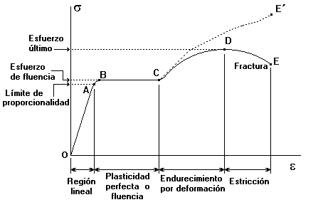
El punto de fluencia es el nivel de esfuerzo en el que un material comienza a deformarse de forma permanente.
En los suelos, es común el comportamiento elasto-plástico, lo que significa que pueden deformarse de manera reversible (elástica) y también irreversible (plástica).
Después del endurecimiento, se alcanza un pico en la curva que representa el máximo esfuerzo que el suelo puede soportar antes de comenzar a fallar. Las partículas han alcanzado su límite de reorganización y cualquier esfuerzo adicional causará una falla localizada.
Indica que el suelo está perdiendo capacidad de resistencia a medida que se concentra la deformación en zonas específicas, lo que corresponde a fisuración interna o formación de planos de deslizamiento.
La deformación en el terreno y las consecuencias asociadas se pueden monitorear a diferentes escalas temporales y espaciales.
Miden el cambio de distancia entre dos puntos mediante la variación de posición entre sus extremos.
Detectan alargamiento o contracción debido a fuerzas externas. Son muy útiles en el monitoreo de grietas en edificios o en el suelo, la convergencia en túneles, y el control de deformaciones en presas y taludes.
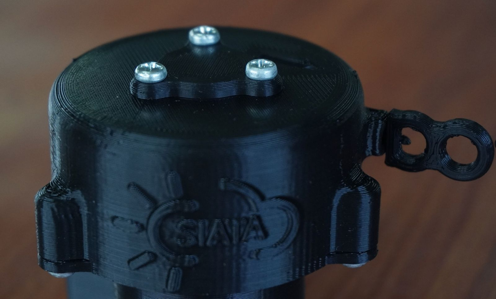
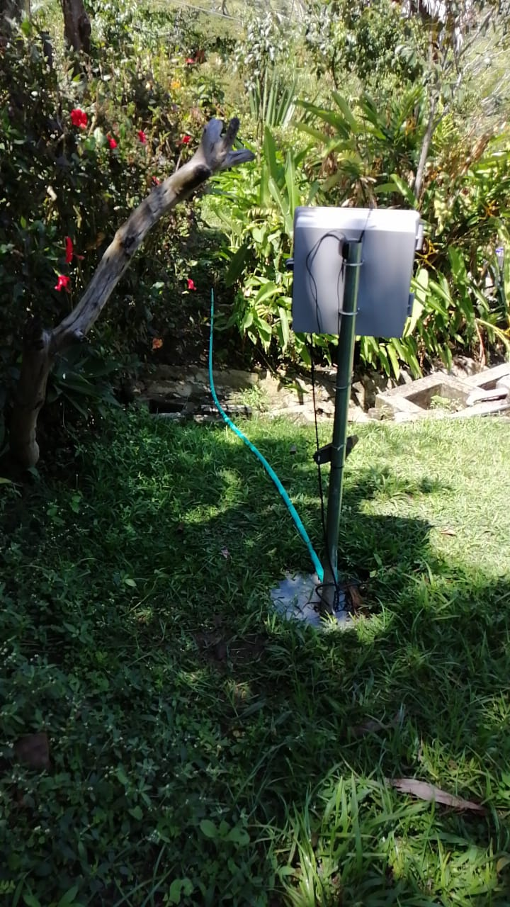
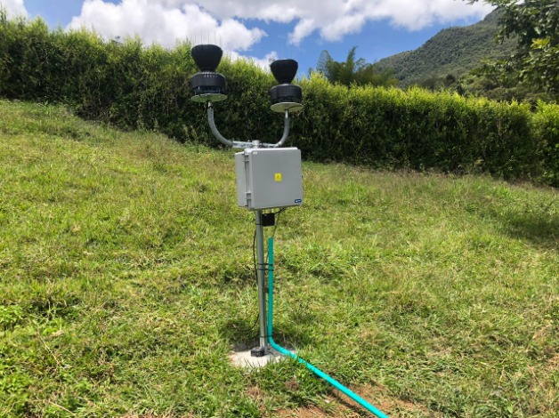
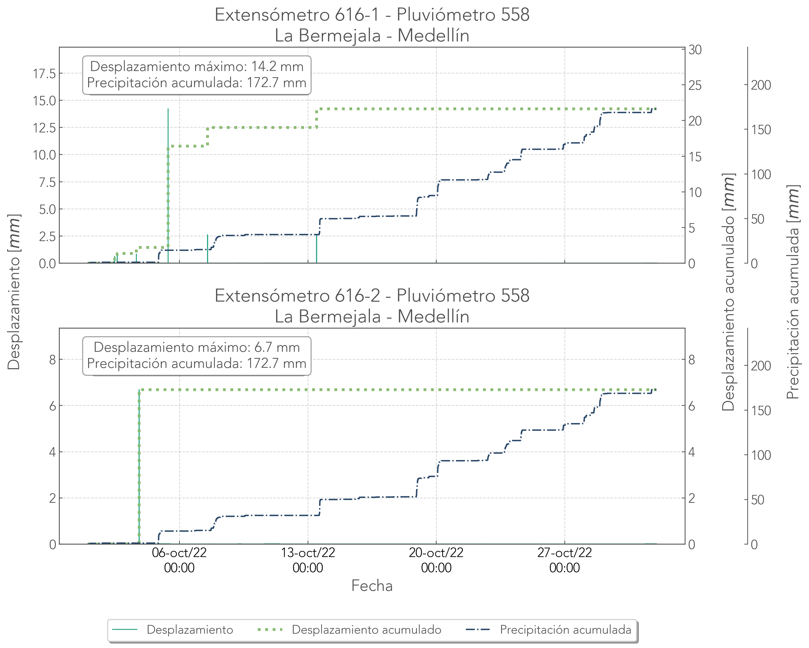
Miden la aceleración de un objeto o estructura en uno o varios ejes, detectando cambios en su movimiento.
Combinados con giroscopios, miden tanto la aceleración como la orientación y movimiento angular en el espacio. Responden a las fuerzas de inercia provocadas por movimientos, convirtiéndolas en señales eléctricas proporcionales a la aceleración.
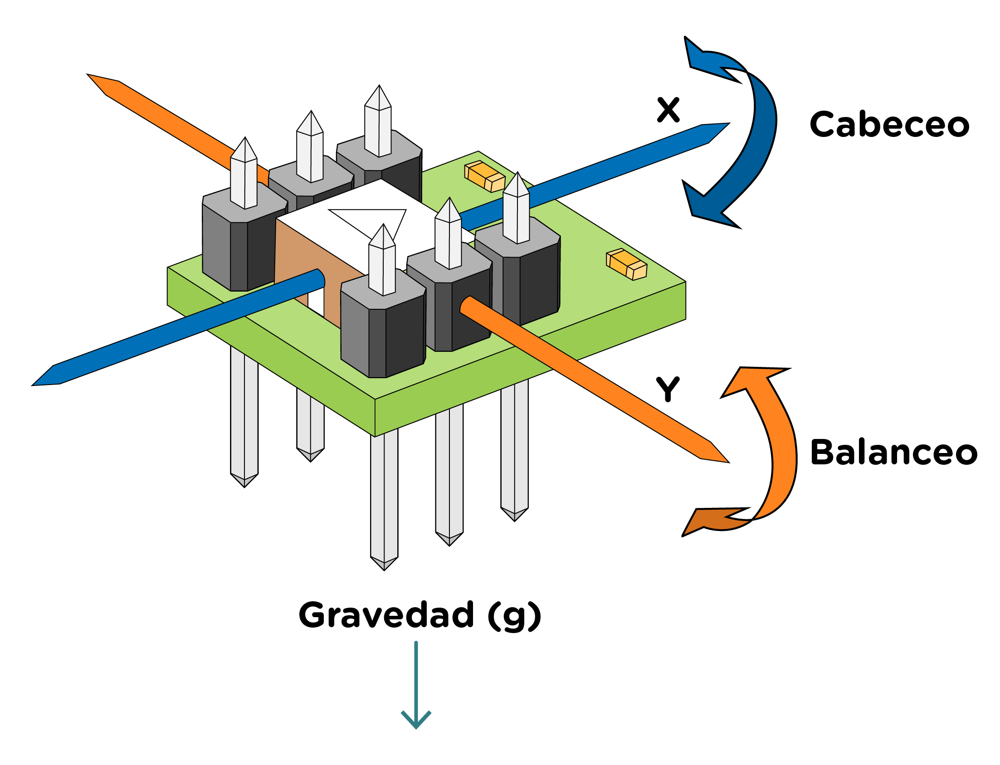
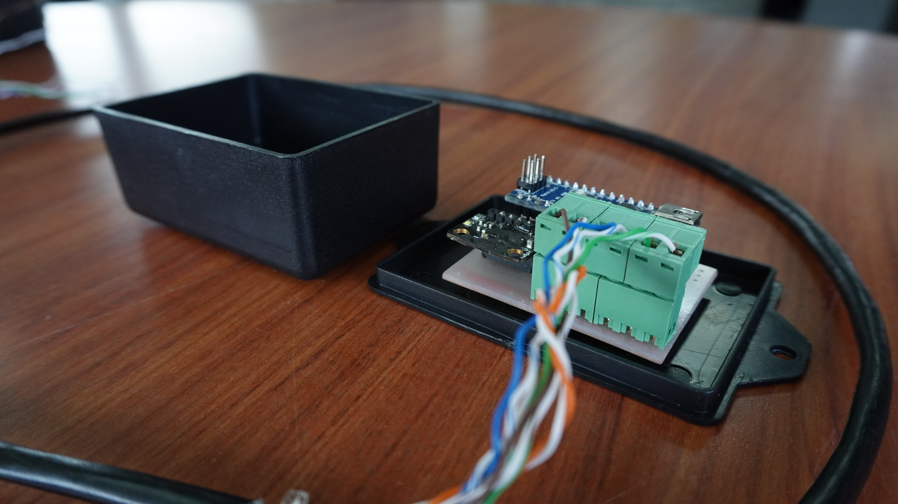
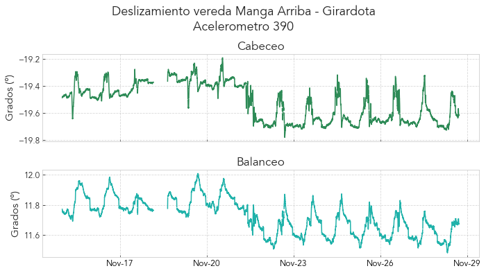
Los inclinómetros miden la deformación a través de una sonda que mide las variaciones de inclinación a lo largo de la profundidad dentro de una tubería ranurada instalada en una perforación.
Componentes y esquema de la inclinometría convencional. Figuras adaptadas de Machan & Bennett (2008).
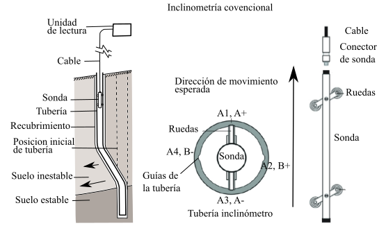
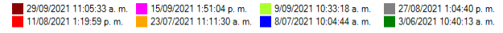
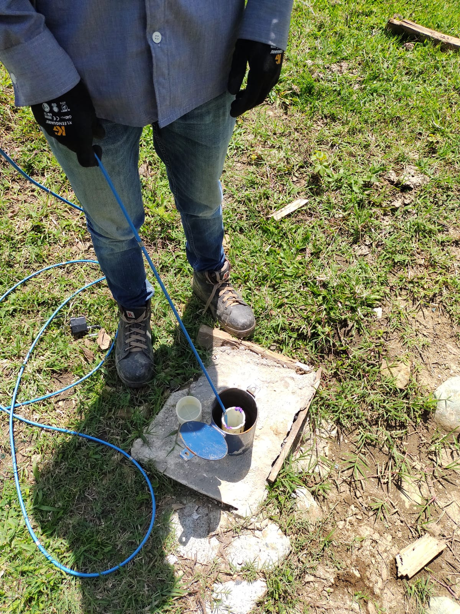
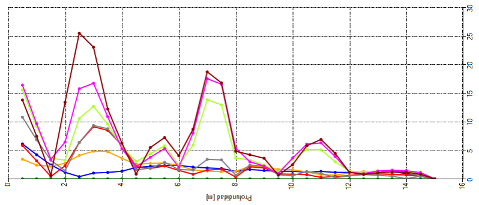
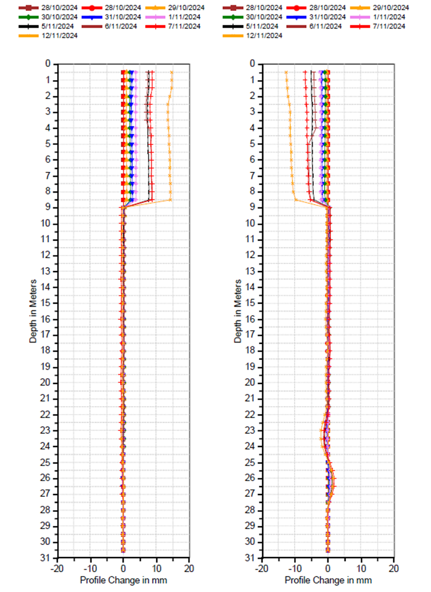
Los sensores TDR (Reflectometría en el Dominio del Tiempo) miden la deformación a través del análisis del tiempo de retorno de un pulso electromagnético enviado a lo largo de una sonda o cable coaxial.
Al registrar variaciones en la velocidad y forma del pulso debido a deformación mecánica del cable, mide desplazamientos internos. Utilizado para monitorear deslizamientos profundos, taludes y deformaciones en infraestructuras enterradas.
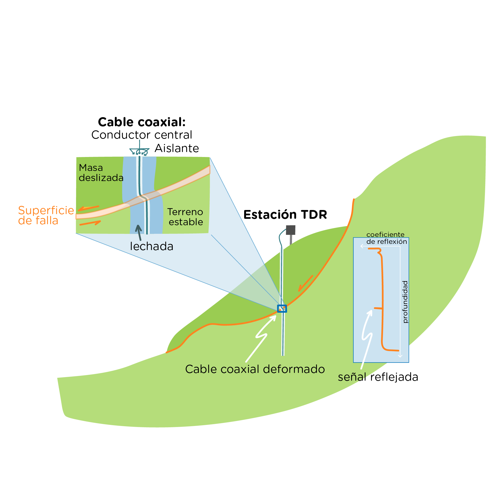
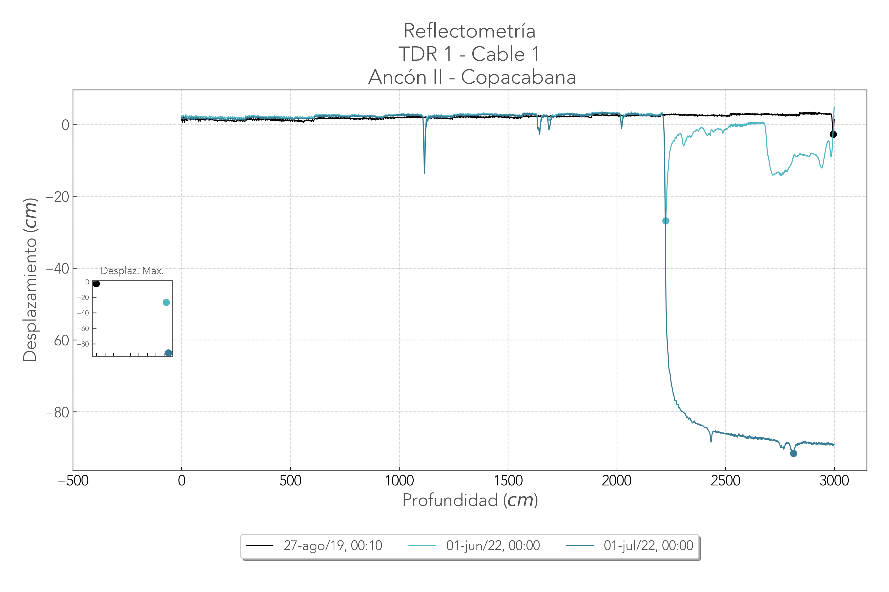
Sensor que mide cambios muy pequeños en la deformación de un material mediante la variación de su resistencia eléctrica (mide qué tanto se estira o comprime un elemento).
Mide fuerza directamente (anclajes, pilotes, cimentaciones).
El principio se basa en el uso de una galga extensométrica (strain gauge).
Las galgas son un hilo metálico muy delgado pegado a una pieza metálica. Tienen un diseño simple pero efectivo basado en la transferencia entre una fuerza aplicada, la deformación del material y el flujo de electricidad.
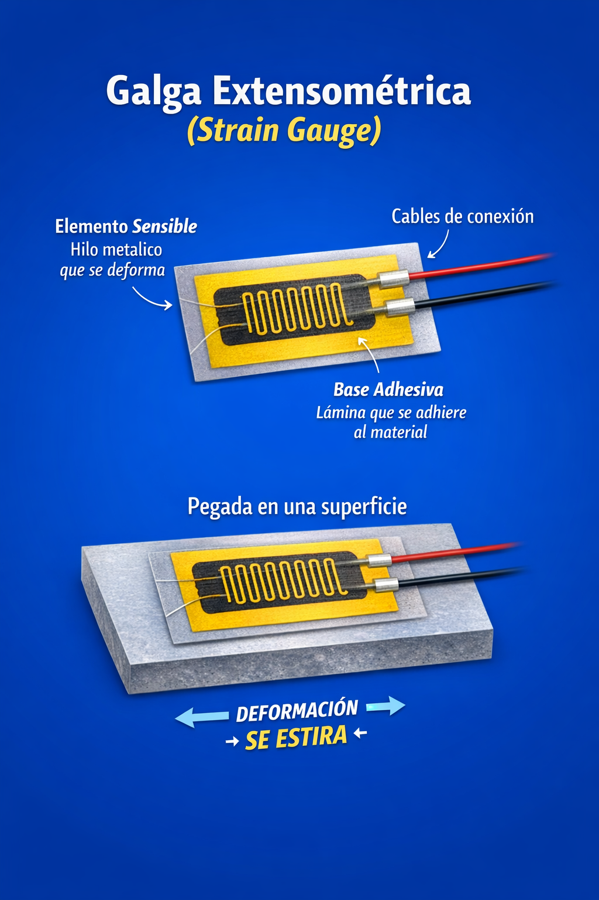
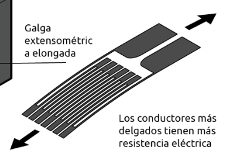
Los cambios en la resistencia eléctrica son muy pequeños, pero los equipos electrónicos pueden detectarlos con extrema sensibilidad.
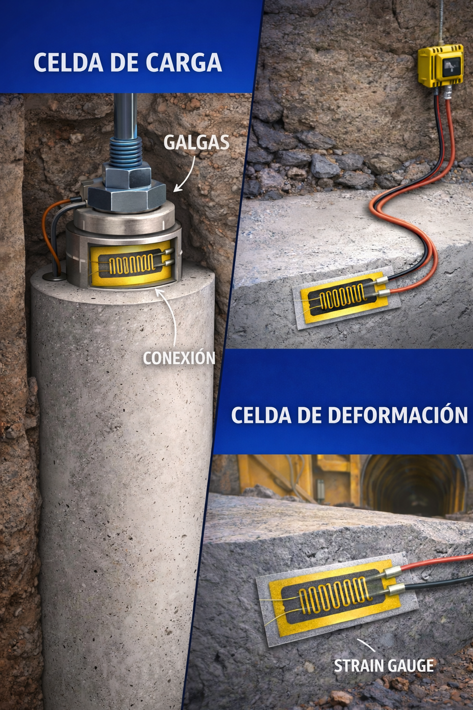
Permite analizar cambios en el terreno utilizando tanto imágenes ópticas como modelos digitales de elevación (DEM). Los drones equipados con cámaras de alta resolución y sensores láser permiten realizar inspecciones detalladas a nivel local con alta precisión.
Al comparar vuelos multitemporales, es posible detectar hundimientos, agrietamientos y frentes de avance en taludes inaccesibles.
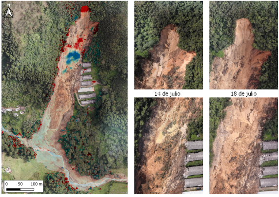
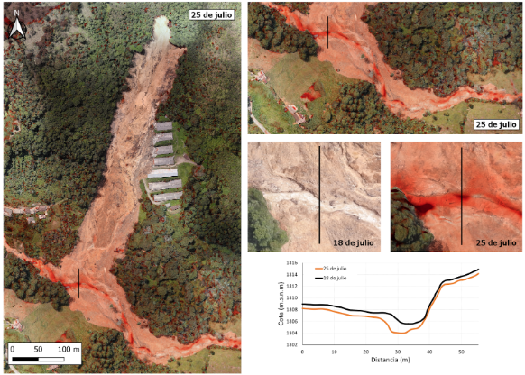
El monitoreo satelital de deformaciones se ha convertido en una herramienta clave en la geotecnia para el control de movimientos del terreno y estructuras a gran escala.
Este tipo de monitoreo utiliza dos tecnologías principales: imágenes ópticas y radar de apertura sintética (SAR). Ambas permiten medir desplazamientos y deformaciones del terreno de forma remota, sin necesidad de instalar sensores físicos en el sitio.
Las imágenes ópticas satelitales proporcionan una vista detallada de la superficie terrestre y permiten detectar deformaciones mediante el análisis de diferencias entre imágenes tomadas en diferentes momentos.
Comparando las posiciones de puntos específicos en imágenes capturadas en fechas distintas, se pueden identificar desplazamientos horizontales y deformaciones superficiales. También permiten realizar análisis de cambios de coberturas.
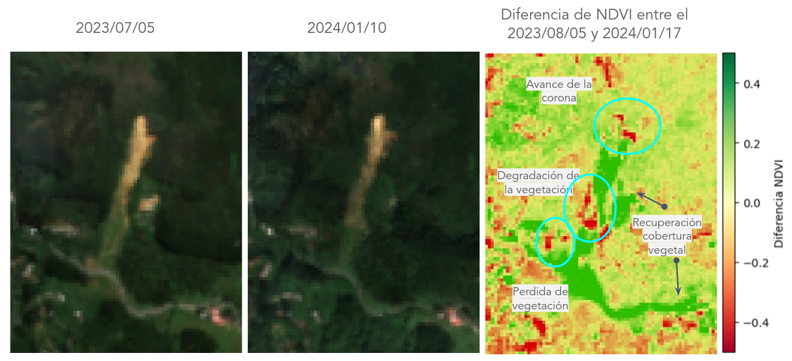
federicogmz.github.io/instrumentacion-geotecnica/lecturas.html#m4
El SAR (Synthetic Aperture Radar) es una tecnología avanzada que mide deformaciones de la superficie terrestre con precisión milimétrica.
El método más común, conocido como Interferometría SAR (InSAR), compara fases de señales de radar capturadas en diferentes momentos para identificar movimientos verticales y en la línea de vista (LOS) del satélite.
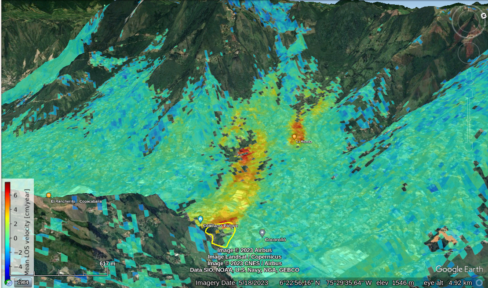